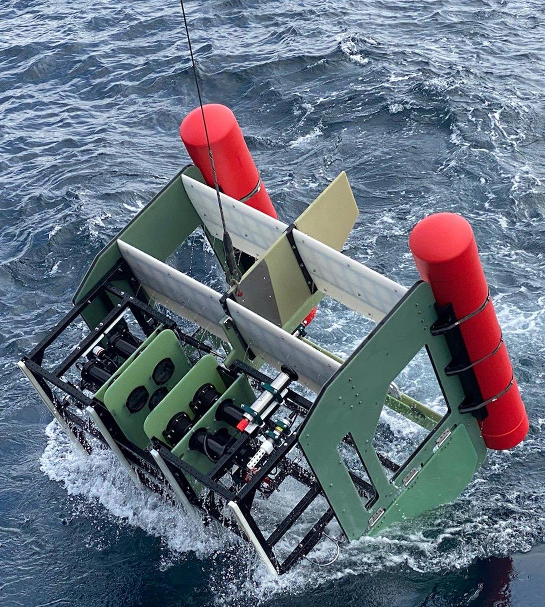

Towed sled
UAF ROV
Built for the University of Alaska Fairbanks. Like most Bellamare sleds, this one pairs plankton shadowgraph imaging with data from conventional oceanographic instruments. What made it ambitious was the count: three full shadowgraph systems alongside the largest sensor suite the company had ever fitted to a single body. It remains the biggest sled Bellamare has released.
I was a part of essentially every aspect of this sled, including structural designs and calculations, hydrodynamic stability designs, actuator implementation, systems integration and much more.